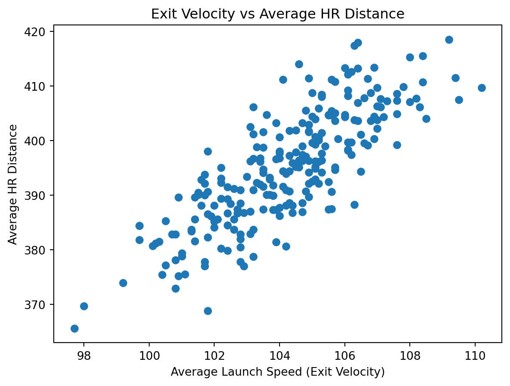
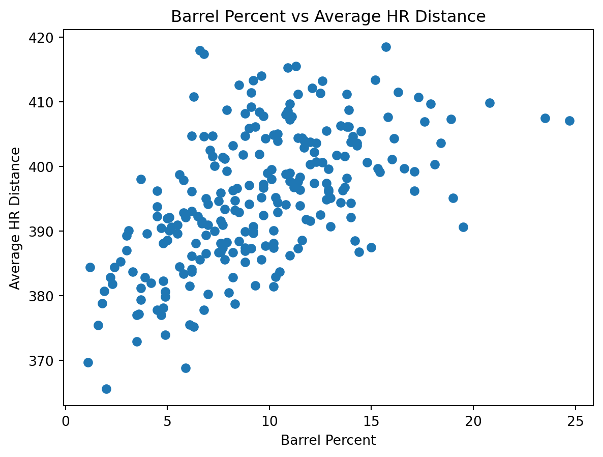

Final Project Report
Introduction
Major League Baseball’s (MLB) Statcast system provides some of the most detailed tracking data across all sports, measuring how hard, how far, and how efficiently players hit the ball. Included in these metrics are maximum values and average values. While the maximum metrics are the ones that usually generate headlines, they do not necessarily reflect the players performance as a whole. For example, a hitter may have the longest home run of the season but only be an okay hitter on average.
The purpose of this project is to explore the relationship between Statcast maximum leaders and Statcast average leaders for key hitting metrics. Specifically, we look to find whether hitters who appear as leaders in Statcast maximum metrics (e.g. longest home run or highest exit velocity) also tend to rank highly in corresponding average metrics. If maximum values strongly align with averages, this suggests consistent skill. If not, it suggests that leaderboard-topping performances may reflect isolated events instead of sustained production. To answer this question we assembled and cleaned a dataset of Statcast hitting leaders for the 2025 season and built a Python analysis package capable of computing summaries, correlations, rankings, scatterplots, and outlier detection. We also created an interactive Streamlit app that allows users to filter hitters and visually explore how maximum performance relates to average outcomes.
Data
The data used in this project come from MLB Statcast hitter leader statistics for the 2025 regular season. Statcast is MLB’s advanced tracking system that records detailed information about every batted ball using radar and camera-based technology. This allows more advanced statistics to be examined like how hard a player hits the ball, how far it travels, and how consistently the player’s performance occurs over time.
The dataset was manually obtained by combining data from the pybaseball package with data obtained through the Baseball Savant website, the official host of Google Cloud statistics. The .csv files containing different statistics were then cleaned and merged into a final dataset, which was then used for all analyses. This dataset gives leaderboard-level summaries for various hitting metrics. The data were collected once and stored on GitHub to make sure the analyses are consistent and reproducible. The final cleaned dataset used throughout this project is saved as: combined_leaders_2025.csv. Each row in the dataset represents a hitter who appeared on at least one Statcast leaderboard during the 2025 season.
Variables of Interest
The analysis looks at both peak performance and average performance so that one-off standout outcomes and overall consistency could be compared. The variables focused on are:
- Home run count (hr_count): Total number of home runs hit by a player during the season
- Average home run distance (avg_hr_distance): Average distance(in feet) of a player’s home runs
- Max home run distance (max_hr_distance): Longest home run hit by the player
- Average launch speed (avg_launch_speed): Average exit velocity (speed of the ball off the bat)
- Maximum launch speed (max_launch_speed): Maximum exit velocity recorded for the player
- Barrels (barrels): Number of “barrels” (batted balls hit with an optimal combination of speed and launch angle)
- Barrel percentage (brl_percent): Proportion of a player’s batted balls classified as barrels
Together, these variables represent different components of home run power like raw strength, quality of contact, and consistency of performance.
Data Preparation
Before analysis, the data were cleaned and filtered using custom Python functions created for this project. This included removing observations with missing values in key variables and filtering out players with less than five total home runs to reduce noise from small sample sizes. This ensured that when comparing hitters, meaningful patterns were found instead of isolated events.
Methods
Our workflow involved data collection, wrangling, analysis, and visualization. All steps were completed in Python and organized into reusable scripts and functions developed for this project.
Data Collection and Dataset Construction
To build the hitter dataset, we pulled pitch-by-pitch Statcast data for the full 2025 regular season using the pybaseball library. Because the focus of this project is on power and peak outcomes, the raw pitch-by-pitch data were filtered to include only home run events. These home run events were then aggregated to the player level. For each hitter, season-level summaries of home run totals, distance, and exit velocity were computed.
Next, a second dataset containing barrel statistics was downloaded directly from the MLB website. To combine the two sources, we made a consistent player name field and kept only the variables needed for analysis (barrels and brl_percent). We then merged the two datasets using player identifiers by linking the Statcast-derived hitter table with the barrel dataset on player ID. The merger of these two datasets is the final analysis dataset we used throughout the project: combined_leaders_2025.csv.
Summary Tables
To assist us in answering our research question, we created several summary tables:
Longest vs. average home run distance: We ranked hitters by maximum home run distance and reported each player’s average home run distance along with supporting context like home run totals and exit velocity metrics.
Barrel and power indicators: We ranked hitters by barrel percentage and reported related power variables such as home run distance and exit velocity metrics to compare quality of contact profiles across hitters.
Workload vs. performance: We examined the relationship between workload (hr_count) and performance (avg_hr_distance) to explore whether players with more home runs also tend to hit longer home runs on average.
Correlation Analysis
In order to analyze relationships among key power metrics, we computed a Pearson correlation matrix across distance, exit velocity, barrels, barrel percentage, and home run totals. This allows for a high-level view of which metrics tend to move together and which capture different components of home run power.
Outlier Detection
A central part of our question was extreme performances so we identified standout hitters using an outlier method. For the selected metrics a z-score was calculated. When a hitter had a value more than 2.5 standard deviations from the mean they were flagged. These players were not treated as data errors, but instead used to highlight potential examples of exceptional peak performance. This allowed us to assess whether these extremes were supported by strong average metrics.
Visualization
Finally, we used scatter plots to visualize the relationships between maximums and averages. These included:
max vs. average home run distance
exit velocity vs average home run distance
barrel percentage vs. average home run distance
home run count vs average home run distance
These visualizations help to show trends, clusters, and potential standout hitters that might not be immediately recognizable from “Top 5” tables alone.
Results
The graph above shows the relationship between maximum home run distance and average home run distance for hitters in the 2025 season. While there is a positive association between the two metrics, the relationship is far from perfect. Several hitters who recorded extremely long maximum home runs ended up with only moderate average distances, suggesting that peak power does not always translate to consistent performance.

This second graph examines exit velocity in relation to average home run distance. Compared to maximum distance alone, exit velocity shows a stronger and more stable association with average distance, indicating that consistent quality of contact may be a better predictor of sustained power.

Barrel percentage also demonstrates a positive relationship with average home run distance as seen above. Hitters with higher barrel rates tend to cluster at higher average distances, supporting the idea that barrel percentage captures consistent contact quality rather than isolated extreme events.

Finally, this last figure explores the relationship between home run count and average home run distance. While higher-volume home run hitters often maintain strong average distances, the relationship shows considerable variability, suggesting that workload alone does not fully explain average power outcomes.
Discussion
The goal of this project was to examine whether hitters who appear as leaders in Statcast maximum metrics also tend to perform well on average, or whether these leaderboard-topping values often reflect isolated events. Overall, the results suggest that while maximum metrics are related to average performance, they do not fully reflect a hitter’s consistency over the course of a season.
Across multiple visualizations, maximum home run distance showed a positive but imperfect relationship with average home run distance. Several hitters recorded extremely long individual home runs without ranking as highly in average distance, indicating that peak power alone does not guarantee sustained production. This supports the idea that maximum Statcast values, while attention-grabbing, can sometimes overstate a player’s typical performance.
In contrast, metrics tied more closely to repeatable contact quality—such as average exit velocity and barrel percentage—showed clearer and more stable associations with average home run distance. Hitters with higher barrel rates and stronger average exit velocity tended to cluster at higher average distances, suggesting that these metrics better reflect consistent power output rather than one-off extremes.
The relationship between home run workload and average distance further highlights the diversity of power profiles among hitters. While many high–home run hitters also maintained strong average distances, the variability in this relationship suggests that volume alone does not explain differences in power consistency. Some hitters appear to rely on frequent but less extreme power, while others produce fewer but more impactful contact events.
Several limitations of this analysis should be noted. First, the threshold for what constitutes a home run varies by stadium. Some ballparks are known to be very hitter-friendly while others are known to be more difficult. A batter from a team that plays all of their home games in a shallow field will accumulate more home runs than a batter of equal skill that plays elsewhere. Another caveat is that the number of home runs is not the only important batting statistic. There are potentially many excellent players that are excluded from this analysis due to their focus on contact hitting. Thus it is important to note that players in this analysis are not necessarily the “best” players, and batters not in this analysis are not necessarily worse players.
Future work could add meaningfully to this analysis in several ways. Examining multiple seasons would help determine whether the observed relationships are stable over time or driven by year-specific effects. Incorporating additional Statcast variables such as launch angle distributions or plate appearance totals could provide a more complete picture of consistency. Finally, modeling variability directly, for example, through measures of dispersion rather than simple averages, could further distinguish between hitters who produce consistent power and those driven by rare peak events.
Reproducibility
- Code repository: GitHub repository
- Interactive app: Streamlit app